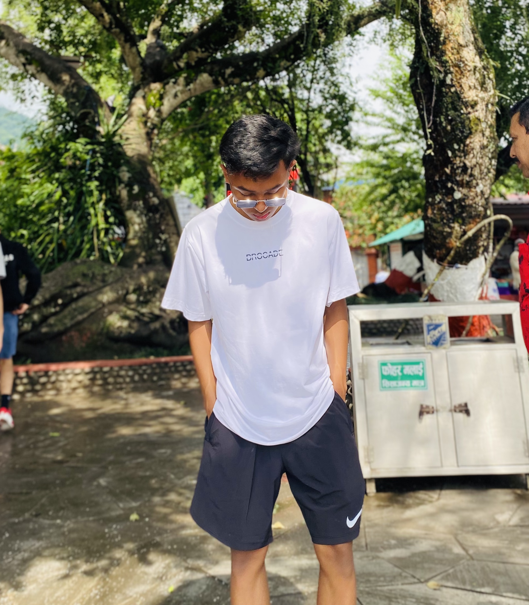

my school

I’m chheten dorje sherpa,and I am 16 years old. I study at east pole secondary school. My father’s name is Mr. sange sherpa, and my mother’s name is Mrs. saru sherpa. I have one younger sister who studies in Triveni Secondary School . I like watching cartoons, and my favorite cartoon character is Sinchan. sI also love playing Indoor games with my sister. And, I love playing cricket with my friends. I am a very honest and decent boy and follow all the instructions from my parents and teachers.
 Dolakha lies 132km east of Kathmandu. Dolakha Town situated north-east of of Charikot. Charikot is the headquarters of Dolakha District in the Janakpur Zone of north-eastern Nepal.The surroundigs of Charikot offer a variety of village treks.The old Newar town of Dolakha and its Bhimeshwor temple can be reached in 1 hour on foot from Charikot.The place of historical, cultural, religious and natural beauty.There are more than dozen temples and stupas including temples of Bhimeshwor, Tripura Sundari, Kali, with various cultural festivals. Statue of Bhimeshwor perspires before the grave crisis of misfortune in the country.Dolakha regarded as the home of ancient civilization. Introduced first silver coin in the history of Nepal by the ruler Indrasingh Dev (1591 to 1605). Original place of Newar community, Newar culture, and Newar language.
Dolakha lies 132km east of Kathmandu. Dolakha Town situated north-east of of Charikot. Charikot is the headquarters of Dolakha District in the Janakpur Zone of north-eastern Nepal.The surroundigs of Charikot offer a variety of village treks.The old Newar town of Dolakha and its Bhimeshwor temple can be reached in 1 hour on foot from Charikot.The place of historical, cultural, religious and natural beauty.There are more than dozen temples and stupas including temples of Bhimeshwor, Tripura Sundari, Kali, with various cultural festivals. Statue of Bhimeshwor perspires before the grave crisis of misfortune in the country.Dolakha regarded as the home of ancient civilization. Introduced first silver coin in the history of Nepal by the ruler Indrasingh Dev (1591 to 1605). Original place of Newar community, Newar culture, and Newar language.